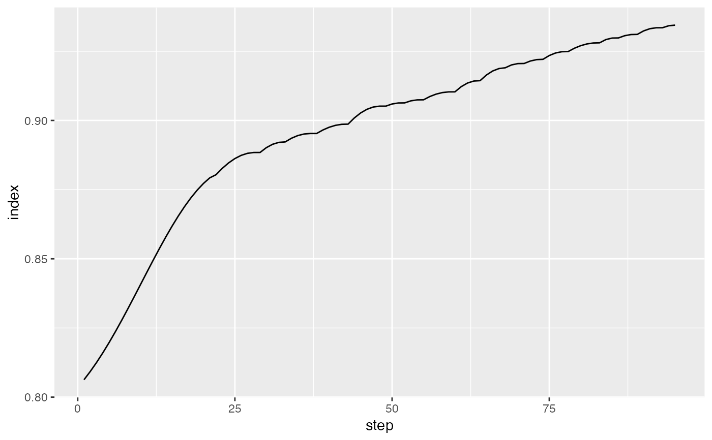

Compute index values for a tour history.
path_index(history, index_f, data = attr(history, "data"))
| history | list of bases produced by |
|---|---|
| index_f | index function to apply to each basis |
| data | dataset to be projected on to bases |
save_history for options to save history
#>#> Value 0.858 8.5 % better - NEW BASIS #> Value 0.822 4.0 % better - NEW BASIS #> Value 0.827 0.6 % better - NEW BASIS #> Value 0.832 0.6 % better - NEW BASIS #> Value 0.836 0.5 % better - NEW BASIS #> Value 0.841 0.6 % better - NEW BASIS #> Value 0.847 0.7 % better - NEW BASIS #> Value 0.847 0.0 % better #> Value 0.848 0.1 % better - NEW BASIS #> Value 0.850 0.3 % better - NEW BASIS #> Value 0.852 0.2 % better - NEW BASIS #> Value 0.852 0.0 % better #> Value 0.853 0.1 % better #> Value 0.855 0.4 % better - NEW BASIS #> Value 0.861 0.6 % better - NEW BASIS #> Value 0.869 0.9 % better - NEW BASIS #> Value 0.875 0.8 % better - NEW BASIS #> Value 0.879 0.4 % better - NEW BASIS #> Value 0.881 0.3 % better - NEW BASIS #> Value 0.882 0.1 % better - NEW BASIS #> Value 0.885 0.2 % better - NEW BASIS #> Value 0.885 0.1 % better #> Value 0.885 0.0 % better #> Value 0.886 0.2 % better - NEW BASIS #> Value 0.887 0.1 % better #> Value 0.886 0.0 % better #> Value 0.886 0.0 % better #> Value 0.887 0.1 % better #> Value 0.886 0.0 % better #> Value 0.886 0.0 % better #> Value 0.887 0.1 % better #> Value 0.886 0.0 % better #> Value 0.886 0.0 % better #> Value 0.887 0.1 % better #> Value 0.886 0.0 % better #> Value 0.886 0.0 % better #> Value 0.886 0.0 % better #> Value 0.886 0.0 % better #> Value 0.886 0.0 % better #> Value 0.888 0.2 % better - NEW BASIS #> Value 0.888 0.0 % better #> Value 0.888 0.1 % better #> Value 0.888 0.0 % better #> Value 0.888 0.0 % better #> Value 0.888 0.0 % better #> Value 0.888 0.0 % better #> Value 0.888 0.0 % better #> Value 0.888 0.1 % better #> Value 0.888 0.0 % better #> Value 0.888 0.0 % better #> Value 0.888 0.0 % better #> Value 0.888 0.0 % better #> Value 0.888 0.1 % better #> Value 0.888 0.0 % better #> Value 0.888 0.0 % better #> Value 0.888 0.0 % better #> Value 0.888 0.0 % better #> Value 0.888 0.0 % better #> Value 0.888 0.0 % better #> Value 0.888 0.0 % better #> Value 0.888 0.0 % better #> Value 0.888 0.0 % better #> Value 0.888 0.0 % better #> Value 0.888 0.0 % better #> No better bases found after 25 tries. Giving up. #> Final projection: #> 0.249 -0.098 #> -0.836 0.046 #> -0.346 0.222 #> -0.145 -0.957 #> -0.082 -0.146 #> 0.301 -0.037#> [1] 0.7903254 0.8216616 0.8269246 0.8320155 0.8361912 0.8409746 0.8469400 #> [8] 0.8478606 0.8502596 0.8519534 0.8554907 0.8609131 0.8687399 0.8754702 #> [15] 0.8787028 0.8814331 0.8823962 0.8845538 0.8860659 0.8876087 0.8876087 #> attr(,"class") #> [1] "path_index"#> [1] 0.2096746 0.1783384 0.1730754 0.1679845 0.1638088 0.1590254 0.1530600 #> [8] 0.1521394 0.1497404 0.1480466 0.1445093 0.1390869 0.1312601 0.1245298 #> [15] 0.1212972 0.1185669 0.1176038 0.1154462 0.1139341 0.1123913 0.1123913 #> attr(,"class") #> [1] "path_index"# Use interpolate to show all intermediate bases as well if (FALSE) { hi <- path_index(interpolate(fl_holes), holes()) hi plot(hi) }